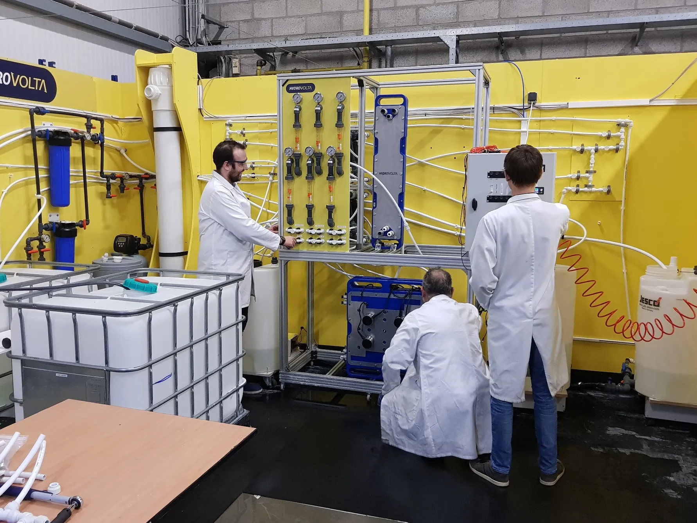
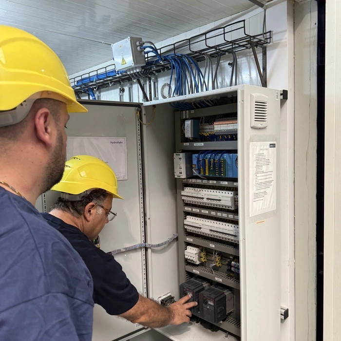

01
Brackish salinity
Target range 1,500–20,000 ppm TDS. Recovery targets and system configuration depend on source chemistry and operating parameters.
SonixED™ is Hydrovolta’s core platform for difficult groundwater in the 1,500–20,000 ppm TDS range. It recovers more usable water, removes target ions selectively, and addresses the scaling dependencies that defeat conventional membrane systems in hard water and silica-laden sources.

Many brackish groundwater sources are technically and commercially viable — but not with conventional membrane systems. Silica fouling, variable salinity, high hardness, and brine disposal constraints compound in real operating conditions.
Target range 1,500–20,000 ppm TDS. Recovery targets and system configuration depend on source chemistry and operating parameters.
Silica forms amorphous deposits that chemical cleaning cannot remove once established. SonixED™’s acoustic cavitation prevents nucleation before it occurs.
Nitrate, sodium, fluoride, and chloride require targeted removal. SonixED™’s selective membrane removes target ions while retaining Ca²¹ and Mg²¹.
SonixED™ targets 2–5% residual brine in suitable applications — significantly less than conventional membrane treatment, reducing disposal burden and liability.

Three integrated mechanisms each addressing a specific failure mode of conventional treatment. Together they deliver a combination of recovery rate, scaling resistance, and ion selectivity that is not achievable with standard RO configurations for difficult brackish sources.
Performance claims are tied to real operating data from active deployments, not laboratory projections.



TDS, hardness, nitrate, silica, target flow, target use. We assess fit and design the configuration around your specific chemistry.
Institutional partners & backing